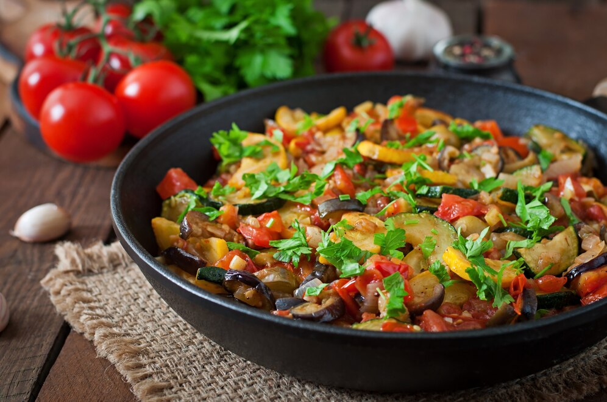
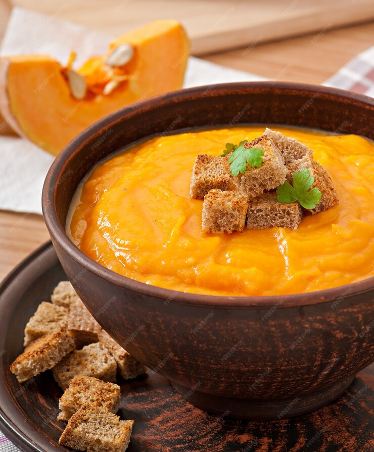

G
GourmeTech
Accueil
Ajouter une recette
Mes favoris
A propos
Rechercher
Catégorie
Entrée
Plat
Dessert
Temps de préparation
Rapide (< 30 min)
Moyen (30-60 min)
Long (> 60 min)
Difficulté
Facile
Moyen
Difficile
Tarte aux pommes
Dessert
60 min
Facile
Voir la recette

Ratatouille provençale
Plat
45 min
Moyen
Voir la recette

Velouté de potiron
Entrée
30 min
Facile
Voir la recette